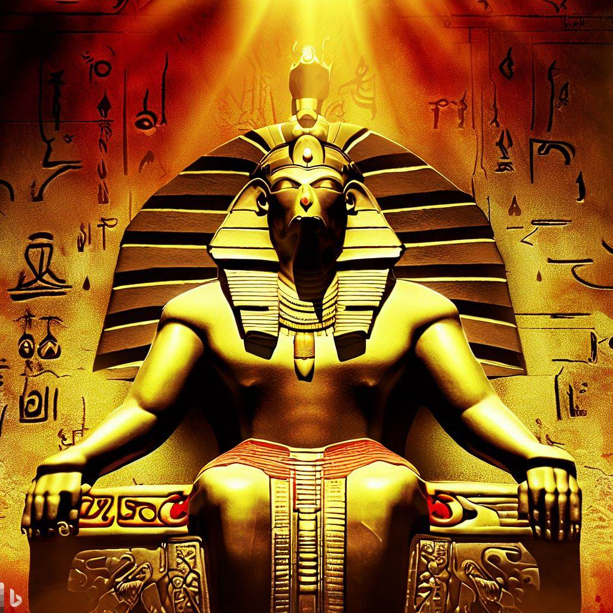
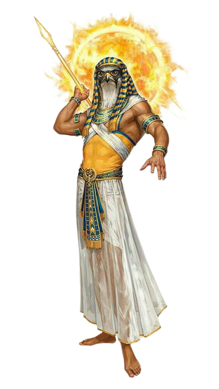

Deus Egípcio Rá
Sobre o Deus Egípcio
Rá é um dos deuses mais famosos da mitologia egípcia, representando o sol e sua importante influência na terra e na humanidade. Ele é frequentemente descrito como um deus com cabeça de falcão e um disco solar, simbolizando sua natureza solar. Rá é considerado o criador e sustentador do mundo, associado à vida, luz e energia. Na mitologia, Rá viaja pelo céu durante o dia, iluminando o mundo com sua luz e calor. À noite, ele embarca numa viagem ao inferno, enfrentando perigos e desafios para renascer no dia seguinte, espelhando o ciclo natural do sol. Esta jornada de Rá também simbolizava a morte e o renascimento, ligando-o à ideia de renovação e ressurreição. Além do seu papel cósmico, Rá também teve um enorme impacto na vida diária dos egípcios. Ele era reverenciado como o deus supremo, e muitos faraós reivindicavam uma conexão direta com ele, fortalecendo sua legitimidade como líderes. Rá também está associado à cura e proteção, e é invocado em orações para trazer saúde e bem-estar. O mito de Rá também estava relacionado a outras divindades egípcias, como Osíris, Ísis e Hórus, que desempenhavam papéis inter-relacionados no panteão. Este entrelaçamento de mitos reflete a complexidade e profundidade da mitologia egípcia, revelando a importância de Rá como figura central num complexo sistema de crenças. Concluindo, Rá é uma figura icônica da mitologia egípcia, simbolizando o sol e sua influência significativa. Sua jornada diária pelo céu e pelo inferno simboliza o ciclo natural de vida, morte e renascimento. Como deus supremo e criador, Rá desfrutou de uma presença duradoura na cultura egípcia antiga e continua a ser uma figura fascinante e reverenciada na compreensão da mitologia egípcia moderna.
Galeria de imagens:
 